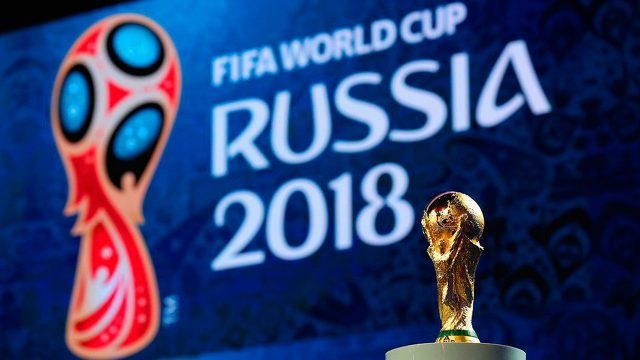
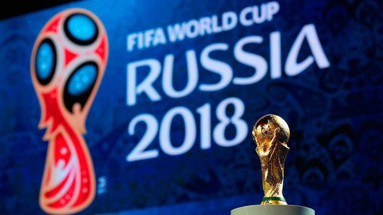
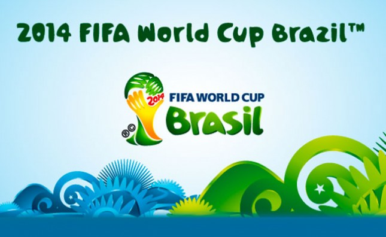
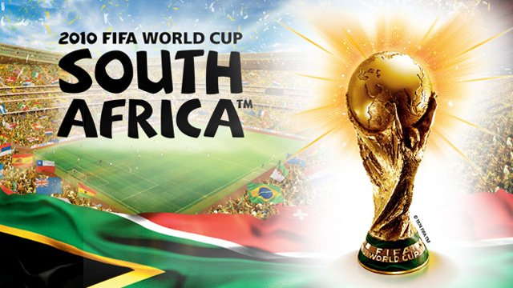

Rusia 2018: Live it up
Nicky Jam, Will Smith y Era Istefri, con la producción de DJ Diplo, fueron los responsables de crear el tema del mundial celebrado en Rusia 2018.
Nicky Jam, Will Smith y Era Istefri, con la producción de DJ Diplo, fueron los responsables de crear el tema del mundial celebrado en Rusia 2018.
Pitbull, Jennifer López y Claudia Leitte. Fueron las grandes estrellas que hicieron este que formaron parte del disco completo del mundial como Dar un Jeito (We will find a way).
Este es uno de los temas más amados por todos los aficionados, a cargo de Shakira con el nombre de Waka Waka o también concocida como esto es áfrica, con más de 680 millones de reproducciones en Youtube convirtiéndolo en un éxito mundial.
